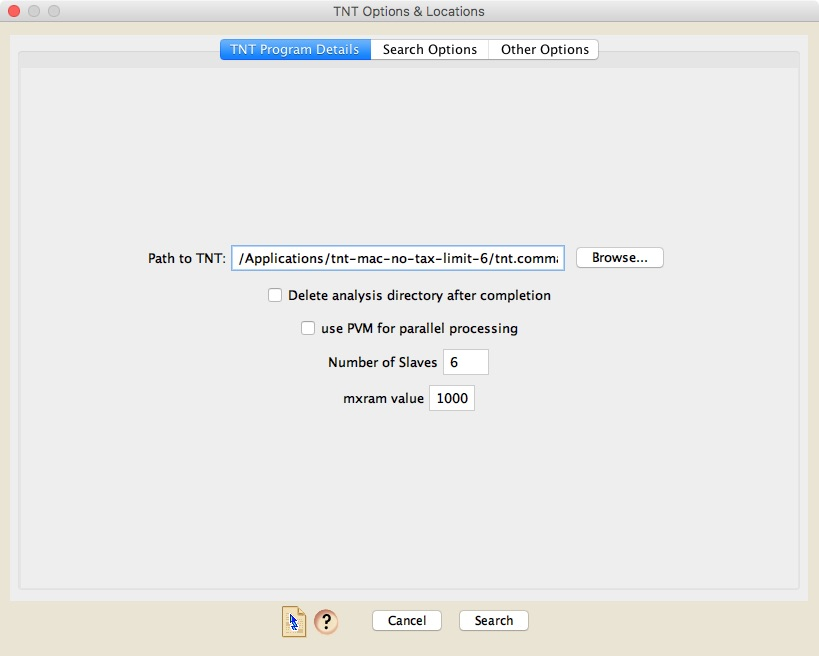
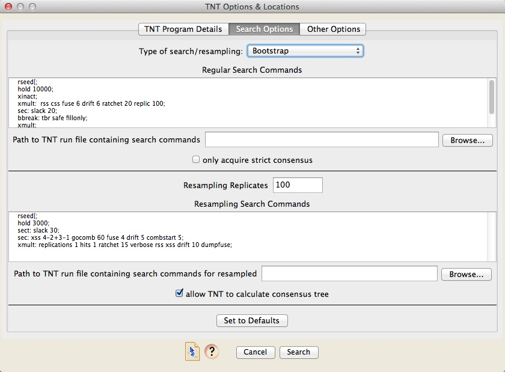
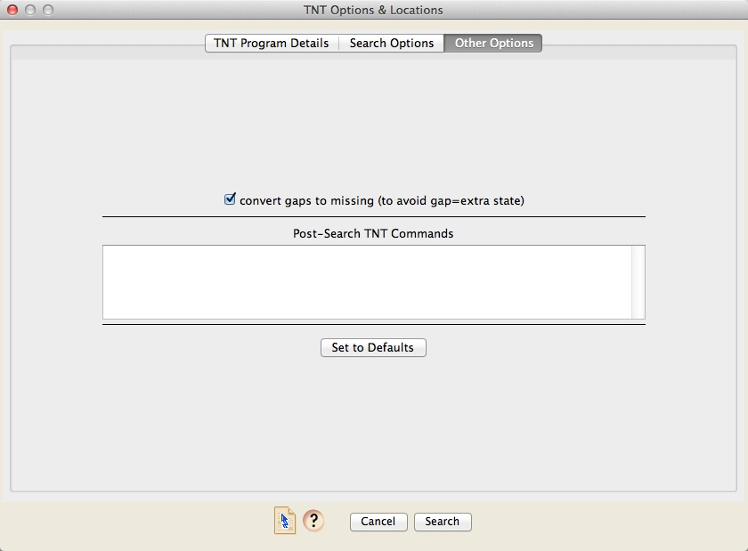

TNT
TNT is a program that does parsimony analyses. It is written by Goloboff, Farris, and Nixon, and is available at http://www.lillo.org.ar/phylogeny/tnt/ If you use TNT, please cite it appropriately as recommended in the program's documentation.To conduct a parsimony analysis using TNT, choose Analysis>Tree Inference>Tree Search>TNT Trees. A dialog box will appear that has three panels. The first one is critical, as that is the one in which you put the path to TNT.

In addition, the TNT Program Details panel lets you specify various aspects of the process - how much memory (mxram) to make available to the search, and various parameters that involve using multiple cores in your computer's processors. Details about these options can be found in the TNT documentation.
The Search Options panel lets you specify the type of search. You can choose either a regular search for most-parsimonious trees, or searches on resampled matrices (bootstrapping, jackknife, symmetric resampled, poisson bootstrap). The commands to be used for each search are then specified in either the "Regular Search Commands" section or the "Resampling Search Commands" section, as appropriate. You can either type in the search commands in the field in the dialog box, or store the commands in a script file, and specify the path to that TNT run file in the box provided.

If you do a regular search, by default Zephyr will acquire from TNT all of the most parsimonious trees. However, if you choose "only acquire strict consensus", then Zephyr will acquire only the strict consensus of the most parsimonious trees.
The Other Options panel provides a place to change other options. You can as well enter command that TNT will execute after the search.

Citation
- Maddison DR and Will KW. [insert release date here]. TNT Tree Searcher, in Maddison DR and Maddison WP. Zephyr: a Mesquite package for interacting with external phylogeny inference programs. Version [insert release version here]. http://zephyr.mesquiteproject.org/TNTOverview.html